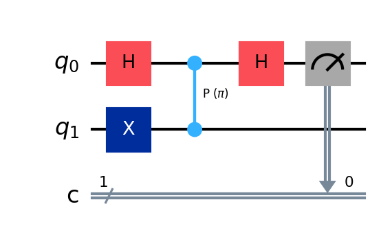
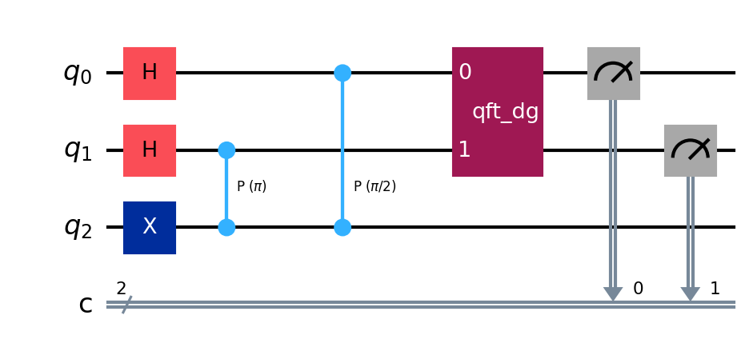
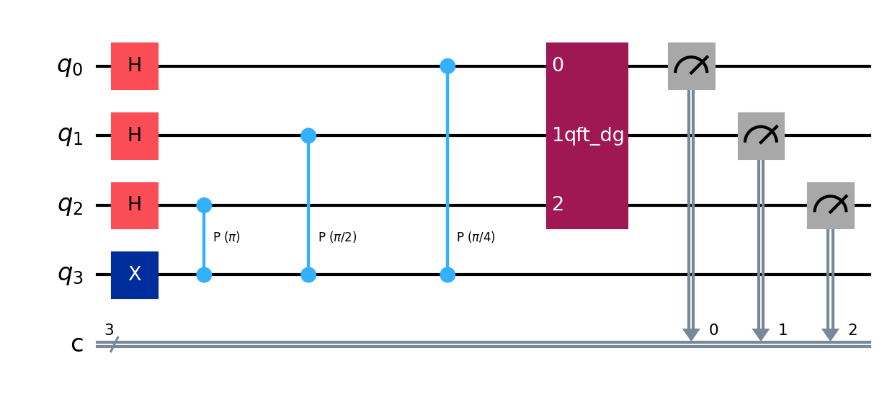

Notebook 04 · Código en Qiskit 2.x · Implementación Práctica
Fase global, qubits de apoyo y codificación en paralelo para 1, 2 y 3 qubits.
Cómo la compuerta controlada escribe el estado de Fourier y por qué requerimos la QFT Inversa.
Implementación en Qiskit para 1, 2 y 3 qubits con sus respectivos diagramas.
Generalización matemática y su rol en la factorización.
El origen físico de la Estimación de Fase Cuántica
Dado un operador unitario $U$ y un eigenestado $|u\rangle$ tal que $U |u\rangle = e^{2\pi i \theta} |u\rangle$, queremos conocer la fase $\theta$.
Necesitamos un sistema de referencia externo. Introducimos un **qubit de apoyo** (auxiliar) preparado en superposición $|+\rangle = \frac{|0\rangle+|1\rangle}{\sqrt{2}}$ y aplicamos una operación controlada-$U$:
Si la fase tiene resolución de 1 bit, se escribe en binario fraccionario como $\theta = 0.\theta_1 = \frac{\theta_1}{2}$ donde $\theta_1 \in \{0, 1\}$.
En 1 qubit, aplicar **Hadamard** equivale a la Transformada Inversa para decodificar la fase.
Para mayor precisión, supongamos $\theta = 0.\theta_1 \theta_2 = \frac{\theta_1}{2} + \frac{\theta_2}{4}$. Necesitamos 2 qubits de apoyo ($c_0$ y $c_1$) en $|+\rangle$:
Qubit $c_1$ (peso $2^{-2}$): Aplicamos Controlled-$U^{2^1} = c\text{-}U^2$. La fase aplicada es $2\theta = 2(0.\theta_1 \theta_2) = \theta_1.\theta_2 \equiv 0.\theta_2 \pmod 1$. El estado queda: $\frac{|0\rangle + e^{2\pi i 0.\theta_2}|1\rangle}{\sqrt{2}}$.
Qubit $c_0$ (peso $2^{-1}$): Aplicamos Controlled-$U^{2^0} = c\text{-}U^1$. La fase aplicada es $1\theta = 0.\theta_1 \theta_2$. El estado queda: $\frac{|0\rangle + e^{2\pi i 0.\theta_1 \theta_2}|1\rangle}{\sqrt{2}}$.
El estado conjunto de los qubits de apoyo es:
Para una fase de 3 bits $\theta = 0.\theta_1 \theta_2 \theta_3$, usamos 3 qubits de apoyo y aplicamos potencias en cascada de $U$ ($U^4, U^2, U^1$):
El estado conjunto del registro de apoyos es:
Recordemos la definición matemática de la **Transformada de Fourier Cuántica (QFT)** para un estado base binario $|x_1 x_2 \dots x_n\rangle$:
El estado que generamos en el registro de apoyos al aplicar compuertas controladas en cascada ($U^{2^j}$) es **exactamente** la QFT de la fase $|\theta_1 \theta_2 \dots \theta_n\rangle$.
Por lo tanto, para decodificar las fases relativas y obtener el valor binario legible en el laboratorio, debemos aplicar obligatoriamente la Transformada de Fourier Cuántica Inversa ($QFT^\dagger$).
Construcción paso a paso de los circuitos en Qiskit

from qiskit import QuantumCircuit
import numpy as np
# 1 qubit de control (0) + 1 qubit objetivo (1)
qc = QuantumCircuit(2, 1)
# Superposición en control
qc.h(0)
# Preparar eigenestado |1> en objetivo
qc.x(1)
# CP (Control-Phase) con theta = 0.5 (fase = pi)
qc.cp(np.pi, 0, 1)
# QFT Inversa de 1 qubit (Hadamard)
qc.h(0)
# Medida
qc.measure(0, 0)
from qiskit import QuantumCircuit
from qiskit.circuit.library import QFTGate
import numpy as np
# 2 qubits control (0, 1) + 1 objetivo (2)
qc = QuantumCircuit(3, 2)
for q in range(2):
qc.h(q)
qc.x(2) # Estado objetivo |1>
# Cascada controlada (fase theta = 1/4)
fase = 2 * np.pi / 4
qc.cp(2 * fase, 1, 2) # c-U^2 (control 1)
qc.cp(fase, 0, 2) # c-U (control 0)
# QFT Inversa de 2 qubits (Decodificación)
qc.append(QFTGate(2).inverse(), [0, 1])
qc.measure([0, 1], [0, 1])
from qiskit import QuantumCircuit
from qiskit.circuit.library import QFTGate
import numpy as np
# 3 qubits control (0, 1, 2) + 1 objetivo (3)
qc = QuantumCircuit(4, 3)
for q in range(3):
qc.h(q)
qc.x(3) # Objetivo en |1>
# Cascada controlada (fase theta = 1/8)
fase = 2 * np.pi / 8
qc.cp(4 * fase, 2, 3) # c-U^4 (control 2)
qc.cp(2 * fase, 1, 3) # c-U^2 (control 1)
qc.cp(fase, 0, 3) # c-U (control 0)
# QFT Inversa de 3 qubits (Decodificación)
qc.append(QFTGate(3).inverse(), [0, 1, 2])
qc.measure([0, 1, 2], [0, 1, 2])Demostración algebraica de por qué colapsa en el valor correcto
Para $N=8$ estados, la QFT Inversa se define formalmente como:
Supongamos que la fase del sistema es exactamente $\theta = 3/8$ (binario $0.011_2$, es decir, estado $|3\rangle$). El estado que entra al decodificador es:
Aplicando el operador de decodificación al estado codificado anterior:
Evaluamos la suma geométrica interna $\sum_{k=0}^7 r^k$ con $r = e^{2\pi i (3-j)/8}$:
El estado colapsa únicamente en $|3\rangle = |011\rangle$ con probabilidad 1.
Generalización matemática para n qubits y Shor
Para un registro de $n$ qubits, cualquier estado computacional $|x\rangle = |x_1 x_2 \dots x_n\rangle$ se mapea a la superposición factorizada de fases:
Complejidad de Compuertas: El circuito de QFT requiere $\mathcal{O}(n^2)$ compuertas elementales (Hadamards y rotaciones de fase controladas $R_k$).
Ventaja Cuántica: La transformada de Fourier discreta clásica requiere $\mathcal{O}(n 2^n)$ operaciones aritméticas. Esto representa una aceleración exponencial.
El algoritmo de estimación de fase cuántica (QPE) utiliza esta estructura general para estimar la fase $\theta$ del operador modular de Shor $U_a |y\rangle = |a y \pmod N\rangle$:
📓 Prueba todos los códigos directamente en notebooks/04_quantum_phase_estimation.ipynb
🐍 Ejecuta python skills_y_configs/generate_circuit_images.py para actualizar los diagramas.